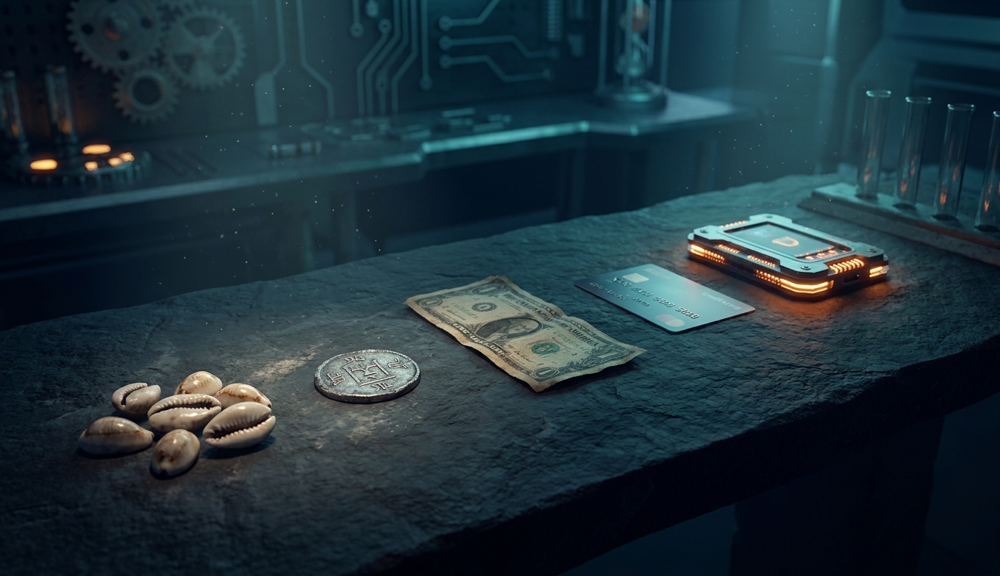
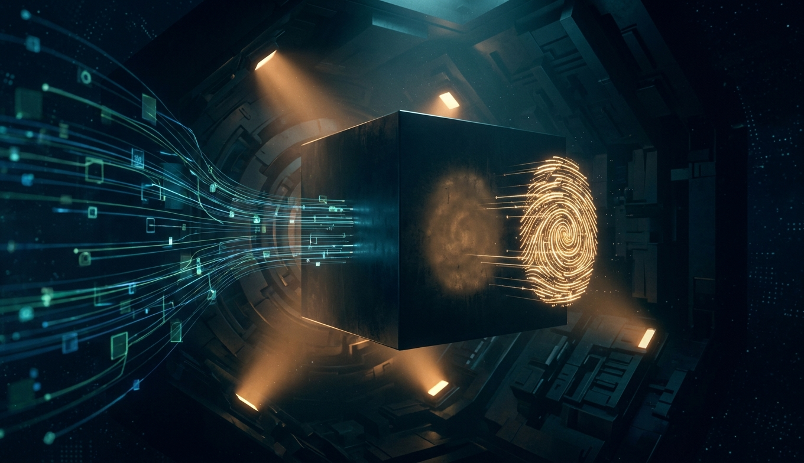
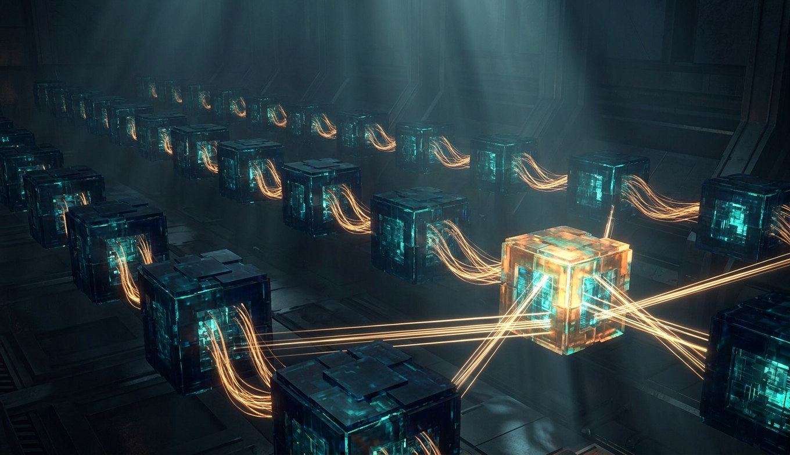
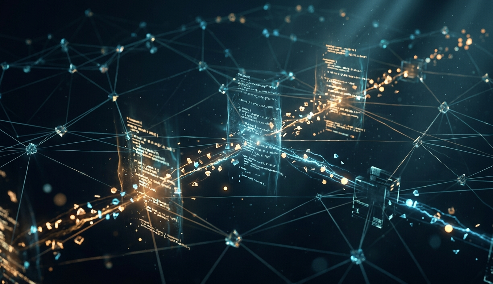
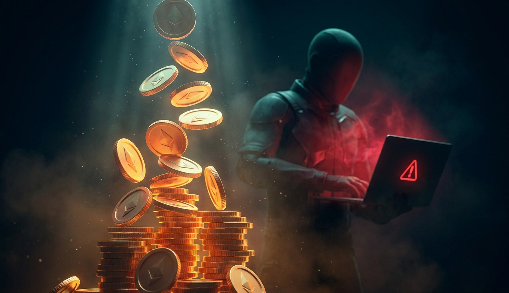
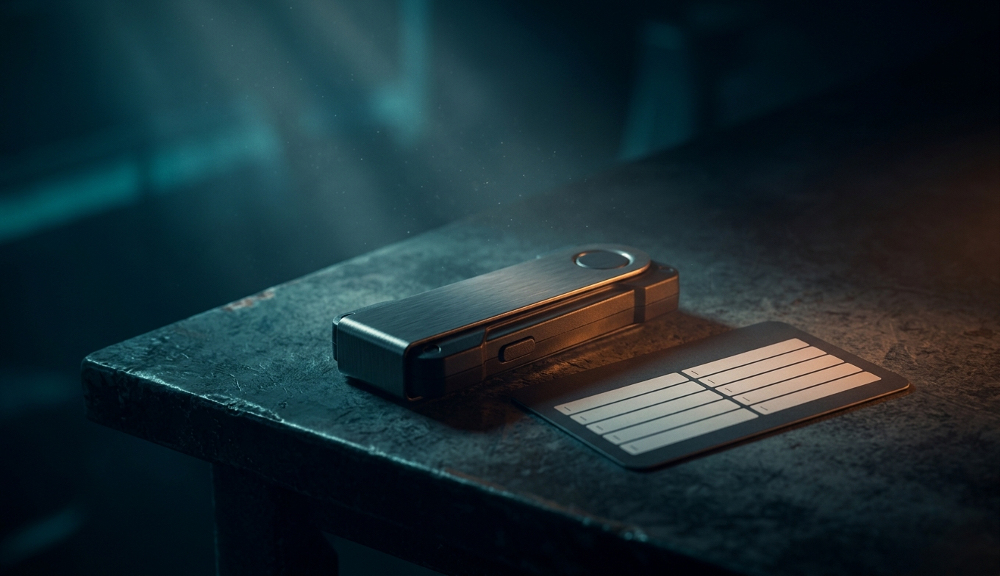
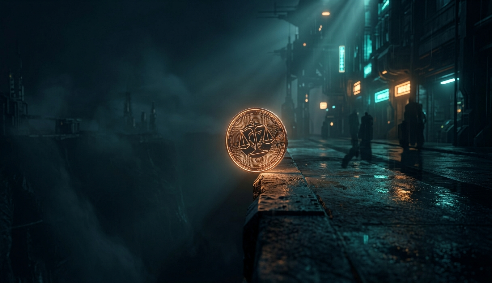

Деньги — это записи о том, кто кому сколько должен. Тысячи лет эти записи вёл кто-то, кому все верили: храм, король, банк. Биткоин — первая работающая попытка вести их без того, кому верят.

Вся крипта стоит на двух математических инструментах, каждому по полвека. Понял их — понял 80% всего остального.

Реестр у всех одинаковый, добавлять в него может кто угодно, стирать — никто. Фокус в том, как 15 000 узлов, не доверяя друг другу, приходят к одной версии правды каждые 10 минут.

Биткоин умеет одно: переводить биткоины. Виталик Бутерин в 19 лет предложил: а давайте блокчейн будет исполнять любые программы. Получился мировой компьютер — медленный, дорогой, но который никто не может выключить.

Технология — 10% крипты. Остальные 90% — цены, хайп, мошенничество и психология толпы. Разбираем механизмы, чтобы отличать первое от второго.

Как хранить, чтобы не потерять, как это регулируется в России и мире, что делают центробанки в ответ — и честный прогноз на десять лет.

Скорее всего: биткоин как золото 2.0 в резервах и ETF — скучный, дорогой, никуда не идущий. Стейблкоины как рельсы для долларов по всему миру — быстрее SWIFT, дешевле Visa. Ethereum и L2 как инфраструктура для токенизации всего: акций, облигаций, недвижимости — Уолл-стрит уже переносит фонды на блокчейн. ZK-доказательства — в паспортах и голосованиях, без слова «крипта». CBDC — у каждого, хочет он или нет.